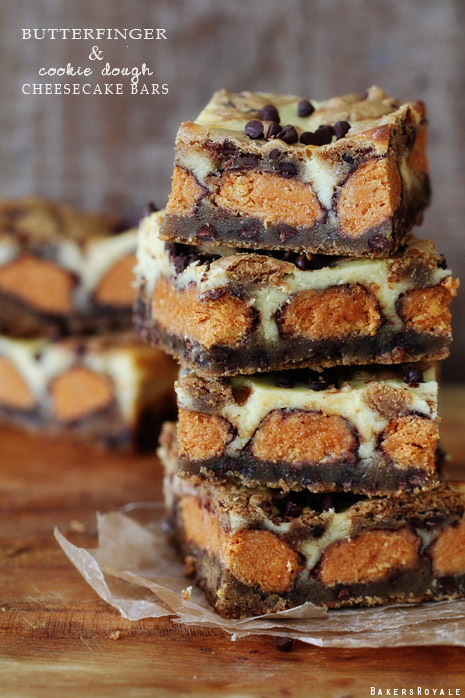

Not The World's Healthiest Foods
Butterfinger Cookie Dough Cheesecake Bars
Diabetes never looked so good!

Prep and Cook Time: You will find out.
Ingredients:
- CHOCOLATE CHIP COOKIE LAYER
- 1/2 cup butter, melted
- 1/2 cup brown sugar
- 1 egg
- 1/2 teaspoon vanilla
- 3/4 cup flour plus 2 tablespoons
- 1 cup mini chocolate chips + 1/2 cup for top
- 5 Butterfinger bars, king size
- Cheesecake Layer
- 8oz. cream cheese, room temperature
- 1/3 cup sugar
- 1 egg
- 1 teaspoon vanilla
Directions:
PREPARATION:
Create a sling by lining the pan with foil so that there is a one inch overhang on each side. Cover foil with bake spray. Heat oven to 375 degrees F.
TO MAKE CHOCOLATE CHIP COOKIE LAYER:
Melt butter and let cool to warm. Add in brown sugar and mix to combine. Add in egg and vanilla extract and mix to combine. Add in flour and fold to combine. Add in 1 cup of mini chocolate chips and fold to combine. Pour mixture into pan; set aside.
TO MAKE CHEESECAKE:
Add all ingredients in a bowl and beat until blended. Set aside.
ASSEMBLY:
- Press 3/4 of cookie mixture into pan. Place Butterfinger bars side-by-side on top of cookie dough. Pour cheesecake mixture on top. Crumble remaining cookie dough sprinkle on top of cheesecake layer along with remaining 1/2 cup of chocolate chips all over top.
- Transfer pan to oven and bake for about 30-40 minutes at 375 degrees F. Remove from oven set on wire rack to cool.
A Few Notes:
- I used the king size Butterfinger because that's what was readily available to me, but any size will work fine.
- And of course if Butterfinger is not your thing, replace it with any candy bar or just skip the candy portion all together.
- I forgot to use a foil sling for the pan—don’t be like me. Sling your pan, it will be easier to remove the bars.
- For ease of cutting and for clean edges, chill bars in the refrigerator before cutting. Place cut bars in the refrigerator until ready to serve. Bars should be served room temperature, so place them on the counter 20 minutes prior to serving.
This recipe is courtesy of Bakers Royale. Click here for the original link!
You can download the css file here.